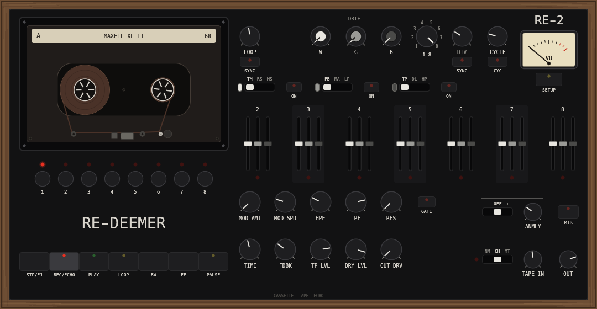
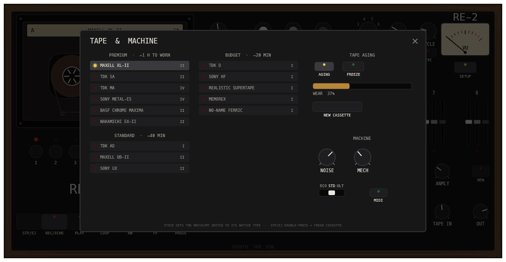
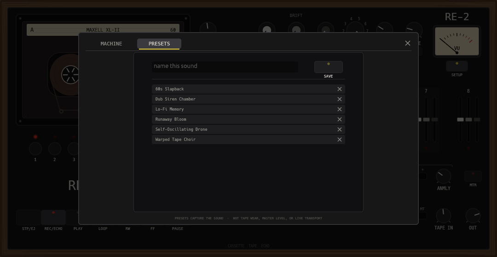

REAL TAPE PHYSICS
Magnetic hysteresis (Jiles-Atherton), motor inertia, wow & flutter at calibrated cassette figures, head bump, self-erasure. TIME is motor speed: turning it bends the pitch of everything on tape.
cassette tape echo · the preorder, redeemed · VST3 / CLAP / AU · macOS / Windows / Linux · free
what's new in v1.1.3 →
THE SPOOLS ARE REAL: TAPE FOOTAGE WINDS LEFT TO RIGHT OVER A 30-MINUTE SIDE, AND REWIND WINDS IT BACK.
RE-DEEMER is free, forever. People waited years for this machine — they deserve to get it for nothing. If it earns a place in your music, the tip jar keeps the tape rolling.
Around 2018, a cassette tape echo instrument was announced: a real cassette transport, a position sequencer played like a keyboard, self-oscillating Roland-style filters, an Anomaly switch that made the tape hiccup on purpose. People pre-ordered. It never shipped.
RE-DEEMER is that machine, redeemed in software — built from the original reference guide and block diagram, as a physical model rather than a delay with tape flavoring. The motor has inertia. The tape has hysteresis. The hiss is recorded onto the tape and echoes with your signal.


Magnetic hysteresis (Jiles-Atherton), motor inertia, wow & flutter at calibrated cassette figures, head bump, self-erasure. TIME is motor speed: turning it bends the pitch of everything on tape.
Eight positions, three fader sets, played from buttons or MIDI. The Cycle sequences them from 8 seconds per step to 4,000 steps per second — at audio rate your faders become a waveform — and phase-locks to your DAW's grid.
24 dB/oct OTA highpass and lowpass inside the echo loop. Resonance to clean self-oscillation — gate it from the 1-8 buttons and play the filter like an 8-note synth.
PLAY mode manipulates the tape without recording. LOOP lifts the erase head for sound-on-sound layering. RW/FF shuttle. MTR kills the motor and the pitch dies with it. Double-tap eject for a fresh cassette.
One deliberate tape hiccup, fired on the cycle's last step — a quick flick or a long singular wobble, pitch bending up or down. A broken machine, on demand.
Runaway feedback is bounded by tape saturation itself, not a limiter. It blooms, compresses, and stays musical while you play TIME and the filters.
install.sh, rescan.